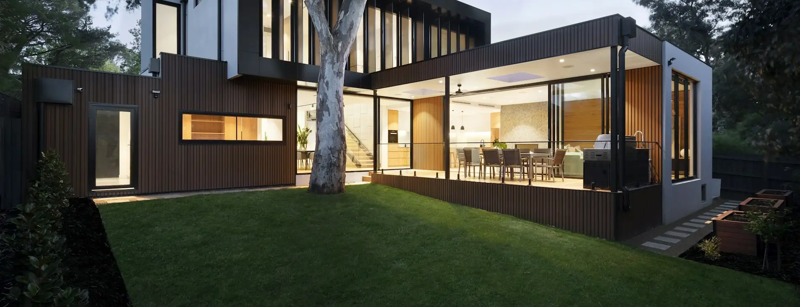

Broward County
Outdoor Remodeling Contractor in Parkland, FL
Parkland yards are big enough that filling them is easy and planning them is the actual work.
The problem with a generous rear yard
Parkland sits in Broward County's north-western corner, and much of its housing stock is comparatively recent — master-planned communities where the houses arrived with a lawn, a screened enclosure and not much else behind them. The lots tend to be generous by Broward standards, and the city's low-density, tree-lined character is a large part of why people move there.
Which produces a particular kind of project. Not "we need somewhere to sit", but "we have a great deal of space and no idea what to do with it". The temptation is to solve it in pieces: a paver terrace one year, a grill island the next, a pergola after that, each one making sense on its own and none of them making sense together.
The alternative is not necessarily building everything at once. It is deciding everything at once — where the zones go, how you move between them, where water goes, and which services have to be buried before anything is paved. Then building it in whatever order suits you. That is the difference between a yard that reads as one place and a yard that reads as three projects.
Available in Parkland
What we build, and where it usually goes
Every service below is available across our whole coverage area. These notes are about how each one tends to be used on a large, relatively open lot.
Pavers
The layer under most of the rest. On a big lot the setting-out matters more than usual, because long runs show every deviation and the joints between one paved zone and the next are what make the whole thing read as deliberate.
Pool decks
Where there is an existing pool, the surround is usually the first thing that dates. Overlay or rebuild is the question that changes everything downstream, and it can only be settled by looking at the slab.
Outdoor kitchens
The service most damaged by being added later. Gas, water, drainage and power want to be in the ground before the paving goes down, so the kitchen's position has to be decided even if it is a later phase.
Pergolas & tiki huts
Shade is what makes a Florida yard usable in the afternoon, and it does more for comfort than any surface specification. A pergola keeps a space open and filtered; a tiki hut gives denser cover over one zone. Both need footings, which means they need to be on the plan early.
Patios
On a large lot the risk is building a paved area far bigger than anyone will furnish. Sizing around actual use — dining, lounging, the route through — beats sizing to fill the space between the house and the fence.
Artificial turf
Rarely the whole lawn here, and often exactly right for the parts of it that keep failing: deep shade beside the house, the run the dog has worn out, the strip that never establishes under a canopy.
Fencing
Long boundary runs, where the honest question is what the fence is for — screening one sightline, marking the line, or enclosing a pool area, which is governed rather than chosen.
Impact windows & doors
The one service here that changes the house rather than the yard. It comes up on this page because the wall facing the terrace usually carries the largest glazing, and doing both at once is far less disruptive than doing them a year apart.
The local problem
Planning a yard with room to spare
Zone it before you fill it. A large rear yard works when it has three or four defined places to be — somewhere to eat, somewhere to lounge, somewhere for children or dogs, somewhere the pool is the point — and clear routes between them. A single vast paved area with furniture floating in it is the most common way to spend a great deal of money and end up using one corner.
Distance is real. On a deep lot, the far end is a genuine walk. A kitchen out there needs services run to it and a route people will actually take at night. A fire pit or dining terrace at the boundary gets used if it is lit and reachable, and gets photographed and abandoned if it is not.
Look back at the house. The view from the terrace matters, but so does the view from inside. Most of the year you are looking at the yard through glass, so where a structure sits relative to the windows is part of the design rather than an afterthought.
Work with the trees. Where a lot has mature planting, it is usually the reason the yard feels established. Roots, canopy and the shade pattern through the day all constrain where paving and footings can sensibly go — and designing around them produces a better result than clearing them for a straight edge.
Get the buried work right first. Drainage runs, conduit, gas and water are cheap while the ground is open and expensive afterwards. Even for a phase you may never build, putting a sleeve in now costs very little.
Complete transformation
Several services, one programme
A complete outdoor remodel is not a bigger version of a paver job. It is a sequencing exercise, and the sequence is what a homeowner cannot easily manage alone when three or four separate contractors are each optimising for their own crew's convenience.
The order is not negotiable in the parts that matter. Levels and drainage are set before anything is laid. Anything that has to be buried goes in while the ground is open. Footings for structures are cast before the paving that surrounds them. Surfaces follow, then the boundary, then the finishing that everyone actually looks at.
Run properly, that means the paving is not cut open to add a gas line, the structure does not sit on a slab poured without knowing it was coming, and the fence goes in after the machinery has finished coming through the gap where it will stand.
It also means one point of accountability. Where the work spans several trades, the split between what is performed and what is coordinated is set out in the written proposal — a contractor who claims to self-perform everything in Florida is describing a business that does not exist.

Design for the climate
What South Florida does to an inland yard
Parkland sits inland, so salt air is not the driver here. Sun, water and storm season are.
Afternoon sun decides usage
A space with no cover is a morning-and-evening space for much of the year. Shade over part of the paving changes how many hours the yard is genuinely usable, which is why structures are worth planning before surfaces.
Rain arrives all at once
Summer storms deliver a great deal of water in a short time. Falls, and somewhere for the water to go, are designed in — surface area without a drainage plan just relocates the puddle.
Everything is hot underfoot
Pale surfaces help at the margins and no paved material stays cool in direct sun. Colour and shade are both worth using; a product sold as cool is worth reading the documentation on.
Storm season is part of the calendar
What is fixed down, what is freestanding and what has to be brought in are practical questions for a Florida yard, and they belong in the design conversation rather than in September.
How it runs
From an empty lawn to a phased plan
-
Walk the whole lot
Not just the area you have in mind. Where the sun lands through the day, where water goes after a storm, what the trees are doing, where machinery can get in, and what the yard looks like from inside the house.
-
Agree the zones
What each part of the yard is for, how you move between them, and what realistically gets used at eight in the evening in August. This is where a plan gets smaller and better.
-
Resolve levels, drainage and services
The invisible half. Finished heights, falls, drainage runs, and any conduit or gas that a later phase will need — decided now whether or not it is being built now.
-
Confirm what governs it
What the municipality requires at your address for this scope, whether a pool barrier is in play, and what your community has to approve. Established before materials are ordered.
-
Phase and propose
Written scope, per phase if you are staging it, including what is deliberately being built now to make the later phase straightforward.
-
Build in sequence, then walk it
Groundwork, buried services, footings, surfaces, boundary, finishing — then a walkthrough of what was built and how to look after each material.
Examples
The kinds of spaces this page is describing


About these photographs
They illustrate the kinds of spaces described on this page. They are not presented as completed projects, and none of them is represented as being in Parkland. When we have verified project photography with confirmed locations, it will be published as exactly that.
Nearby
Other markets around Parkland
Common questions
Questions from Parkland homeowners
Do I have to do the whole yard at once?
No, and on a large Parkland lot phasing is often the sensible route. What matters is that the phases are planned together even if they are built years apart, because the elements that are hardest to retrofit — levels, drainage runs, conduit and gas for a kitchen, footings for a structure — all belong to the first phase whether or not the thing they serve is being built yet. A plan drawn once and delivered in stages costs far less than three unrelated projects that each have to work around the last.
Which services do Parkland homeowners ask for together most often?
A paved surround with a shade structure over part of it, and a kitchen or grill run built into the paving rather than parked on it. Turf frequently joins that group for the areas of lawn that never establish — the shaded strip beside the house, or the ground a dog has claimed. Where the rear boundary is long and open, fencing or screening tends to come last in the conversation and first in the sequence, because getting materials in is easier before the boundary is closed.
Is there anything about Parkland lots that changes how you plan a project?
Space cuts both ways. A generous rear yard means there is usually room to put the pool deck, the dining terrace, the shade structure and the lawn in sensible relation to each other rather than stacking them against the house. It also means distances are real: a kitchen a long way from the house needs services run to it, and a terrace at the far end of the lawn will only get used if there is a proper route to it. Where mature trees and open lawn are part of the character, we plan around what is already there rather than clearing it for convenience.
Do you handle permits for work in Parkland?
We handle the permitting process for the work we carry out, and we confirm what is required for your specific address as part of the project. Requirements are set by the municipality and the county, and they differ between neighbouring cities, so we do not publish rules on this page that might not apply to your property. Where your community also has an approval process, that runs alongside the municipal one and is usually the slower of the two.
How does a Parkland yard cope with heavy summer rain?
That is a levels question, and on a big flat lot it is the one most worth getting right. Every paved area is graded to move water somewhere that can receive it, and the further from the house a surface sits the more deliberate that has to be, because there is more ground for water to cross before it gets anywhere. Where a low spot already collects water after a storm, it gets resolved as part of the work rather than paved over — a new surface laid across a drainage problem inherits it.
Have you built projects in Parkland?
Ask us and we will answer honestly. We deliberately do not publish claims about completed work in particular cities on this website, and the photographs on this page are not presented as Parkland projects. That policy costs us something in local marketing terms and we would rather pay it than describe someone else's yard as ours.
Get a plan for the whole yard, build it when you like
A free on-site visit in Parkland, a written scope, and an honest view on which parts to do first and which can wait a couple of years without costing you twice.